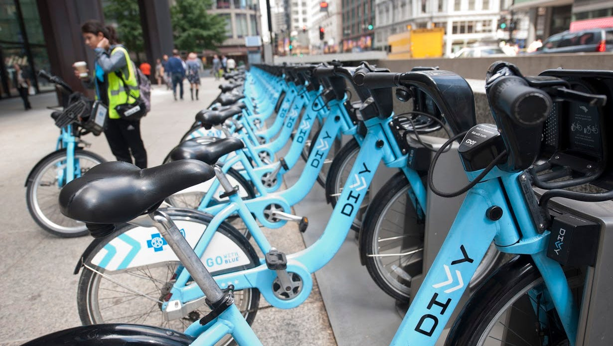

Cyclistic is a bike-sharing program that features more than 5,800 bicycles and 600 docking stations across Chicago, IL. The company has three distinct pricing plans: single-ride passes, full-day passes, and annual memberships -
which is the most profitable of them. In this project, I collected, processed, cleaned and analyzed historical data to identify trends and present insights on how to convert casual customer into annual members.


In this project, I have used SQL Server to clean raw housing data and make it usable for analysis.

In this project, I explore the dataset and investigate what variables have the highest impact in movie's gross revenue. Then I create a linear model that, using some of the features available, tries to predict future revenue.
Creating an analytics report with Python, using data from Johns Hopkins' CSSEGI Github repo.
Using SQL Server to explore global Covid-19 data from 'Our World in Data'.
Using BeautifulSoup and Selenium to scrape product data from Amazon.com, including their description, price, rating, etc.
In this project, with an e-commerce company's dataset, I use Python to explore it and forecast annual revenue, plus cluster the customers using the K-Means algorithm.
In this project, I use Python to explore the dataset and implement two classification models, evaluating which one does best in predicting ad click.

Tableau Dashboards for projects on Covid-19, People Analytics, and more.